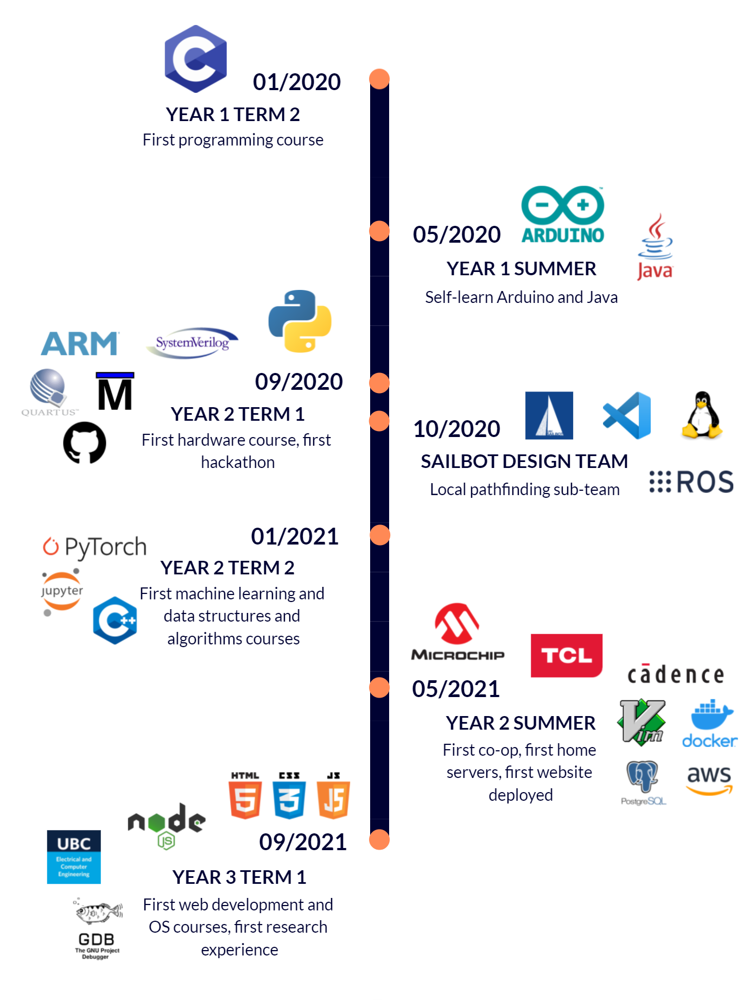

About Me¶
Hobbies¶
Technology Stack Timeline¶
When I learned major programming languages, tools, and frameworks. Created using Visme.
Feel free to check out my Linkedin profile or reach out to me to learn more about my experiences.

Last update:
July 23, 2022